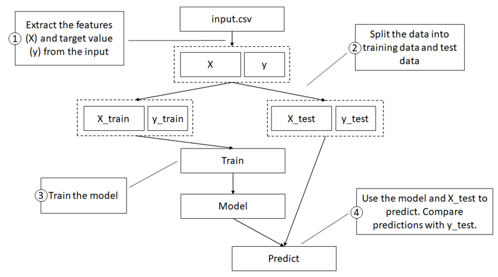

Machine Learning on Azure - Part 1
This is an excerpt from chapter 7 of my book, Data Engineering on Azure, which deals with machine learning workloads. This will be a series of 3 posts. In this post, we'll create a simple ML model in Python. In the next post, we'll go over Azure Machine Learning. In the final post, we'll run this model in Azure Machine Learning. Let's start with the simple ML model.
Training a machine learning model
This model predicts whether a user is likely to be a high spender, based on the number of sessions and page views on our website. A session is a website visit in which the user views one or more pages. Let's assume that the amount of money a user spends on our products is correlated to the number of sessions and page views. We'll consider a user a high spender if they spend $30 or more.
The following table shows our input data: the user's ID, the number of sessions, the number of page views, the amount of dollars spent, and whether we consider the user a high spender.
| User ID | Sessions | Page views | Total spent | High spender |
|---|---|---|---|---|
| 1 | 10 | 45 | 100 | Yes |
| 2 | 5 | 10 | 30 | Yes |
| 3 | 1 | 5 | 10 | No |
| 4 | 2 | 2 | 0 | No |
| 5 | 9 | 33 | 95 | Yes |
| 6 | 7 | 5 | 5 | No |
| 7 | 19 | 31 | 95 | Yes |
| 8 | 1 | 20 | 0 | No |
| 9 | 2 | 17 | 0 | No |
| 10 | 8 | 25 | 40 | Yes |
The listing shows the input CSV file corresponding to the table that
we'll use for training, input.csv.
UserId,Sessions,PageViews,TotalSpend,HighSpender
1,10,45,100,Yes
2,5,10,30,Yes
3,1,5,10,No
4,2,2,0,No
5,9,33,95,Yes
6,7,5,5,No
7,19,31,95,Yes
8,1,20,0,No
9,2,17,0,No
10,8,25,40,Yes
You need to create this file on your machine as input.csv. We are
working with simple input and a simple model because our focus is taking
a model and putting it into production, not in building the model
itself. There are plenty of great references covering model development
and ML if you are interested in the topic.
Assuming you already have Python on your machine, let's start by
installing the two packages we need for our model: pandas and
scikit-learn (also known as sklearn). The following listing shows
the command to install these packages using the Python package manager,
pip. If you don't have Python, you can install it from
https://www.python.org/downloads/.
pip install pandas sklearn
Now that we have our input file and packages, let's look at the high spender model itself. Don't worry if you haven't implemented a ML model before; our model has only a few lines of code and is very basic. We'll walk through the steps that should give you at least a high-level understanding.
Training a model using Scikit-learn
Our model takes an --input <file> argument, representing the input
CSV. It reads this file into a Pandas DataFrame.
A DataFrame is a fancy table data structure offered by the Pandas library. It provides various useful ways to slice and dice the data.
We'll split the data into the features used to train the model (X) and what we are trying to predict (y). In our case, we will take the Sessions and PageViews columns from the input as X, and the HighSpender column as y. This model doesn't care about user ID and the exact amount spent, so we can ignore those columns.
We will split our input data so that we take 80% of it to train the model and use the remaining 20% to test our model. For the 20%, we will use the model to predict whether the user is a high spender and see how our prediction compares with the actual data. This is a common practice for measuring model prediction accuracy.
We will use KNeighborsClassifier from scikit-learn. This implements
a well-known classification algorithm, the k-nearest neighbors vote. We
use a classification algorithm because we want to classify our users
into high spenders and non-high spenders. We won't cover the details of
the algorithm here, but the good news is that this is fully encapsulated
in the scikit-learn library so we can create it with one line of code
and train it with a second line of code. We will use the training data
to train the model, then try to predict on the test data and print the
predictions. The figure shows these steps:

Steps for training our model:
- Extract features and target the value from the input.
- Split the dataset into train and test data.
- Train the model on the training data.
- Use the model to predict on the test data, comparing predictions with actual data.
Finally, we will save the model on disk as outputs/highspender.pkl.
The idea is that once we have a trained model, another system picks it
up and uses it to predict new data. For example, as users visit our
website, we can use the model to predict who is likely to be a high
spender and maybe offer them a discount. Or maybe we want to encourage
non-high spenders to spend more time on the website, hoping it converts
them into high spenders. Either way, some other service has to load this
model and feed it never-before-seen data, and the model will predict if
the user is likely to be a high spender or not.
High spender model implementation
Training a model might sound like a lot, but it is only 25 lines of Python code as the following listing shows:
import argparse
from joblib import dump
import os
import pandas as pd
from sklearn.neighbors import KNeighborsClassifier
from sklearn.model_selection import train_test_split
parser = argparse.ArgumentParser()
parser.add_argument('--input', type=str, dest='model_input')
args = parser.parse_args()
model_input = args.model_input
df = pd.read_csv(model_input)
X = df[["Sessions", "PageViews"]]
y = df["HighSpender"]
X_train, X_test, y_train, y_test = train_test_split(X, y,
test_size=0.2, random_state=1)
knn = KNeighborsClassifier()
knn.fit(X_train, y_train)
score = knn.predict(X_test)
predictions = X_test.copy(deep=True)
predictions["Prediction"] = score
predictions["Actual"] = y_test
print(predictions)
if not os.path.isdir('outputs'): os.mkdir('outputs')
model_path = os.path.join('outputs', 'highspender.pkl')
dump(knn, model_path)
We'll save this Python script as highspenders.py.
Let's break it down and explain each step. First, we import all the
libraries we need. Next, we set up command line argument parsing to
expect an --input argument:
parser = argparse.ArgumentParser()
parser.add_argument('--input', type=str, dest='model_input')
We then grab the input file path from the command line argument and load the file into a Pandas DataFrame:
args = parser.parse_args()
model_input = args.model_input
df = pd.read_csv(model_input)
Then we define the model inputs as the Sessions and PageViews columns and the output (prediction) as the HighSpender column:
X = df[["Sessions", "PageViews"]]
y = df["HighSpender"]
Next, we split the input data into training data and data reserved for testing using a 0.2 ratio:
X_train, X_test, y_train, y_test = train_test_split(X, y,
test_size=0.2, random_state=1)
We select the KNeighborsClassifier with default settings:
knn = KNeighborsClassifier()
Then we train the model on the training data:
knn.fit(X_train, y_train)
Next, we set the prediction score using the trained model on the test data:
score = knn.predict(X_test)
We then format the output, copying it into a new DataFrame and adding Prediction and Actual columns:
predictions = X_test.copy(deep=True)
predictions["Prediction"] = score
predictions["Actual"] = y_test
Finally, we print the predictions to the console, ensure we have an
outputs/ directory, and save the model as outputs/highspender.pkl:
print(predictions)
if not os.path.isdir('outputs'): os.mkdir('outputs')
model_path = os.path.join('outputs', 'highspender.pkl')
dump(knn, model_path)
Let's run the script and check the output. The following listing shows the console command for running the model:
python highspenders.py --input input.csv
You should see the test predictions and actual data printed to the
console. You should also now see the outputs/highspender.pkl model
file. Strictly speaking, we don't need the prediction and printing
part, but it should help if we want to play with the model.
Here, we're using a small input size. The larger the input dataset, the better the accuracy. But again, our focus is taking this Python script and running it in the cloud. The good news is that our approach to DevOps (or MLOps) scales to more complex models and larger inputs. In the next post, we'll look at Azure Machine Learning, the Azure PaaS (platform as a service) offering for running ML in the cloud. We'll then connect the dots and get this model running in Azure Machine Learning in part 3.